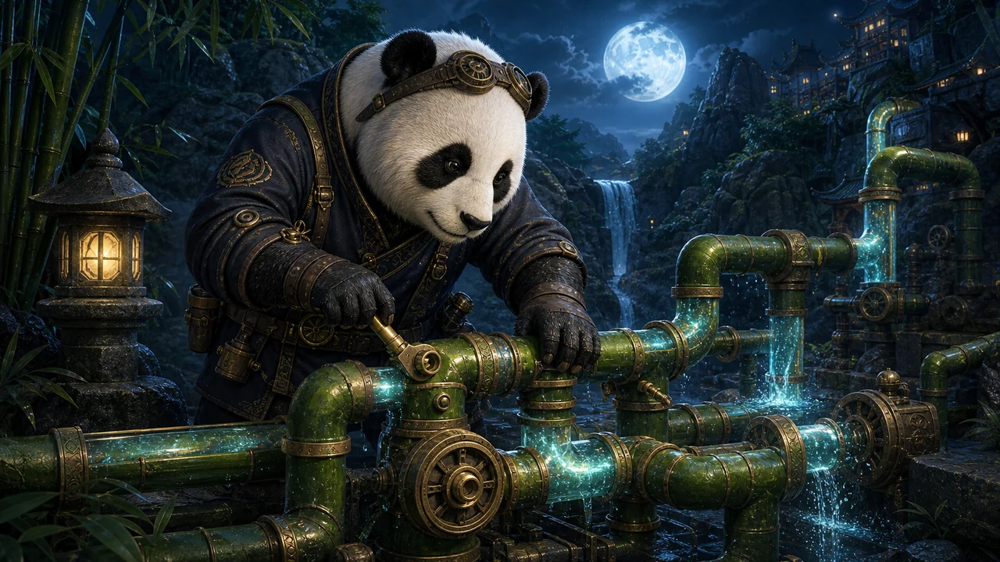

PANKO'S PUZZLE GARDEN
Panko's Bamboo Waterway
Turn the bamboo. Let every drop reach the flowering grove.
PANKO'S PUZZLE GARDEN
How to play
Turn the bamboo. Let every drop reach the flowering grove.
Tap bamboo to turn it clockwise. Connect the spring to the flowering basin.